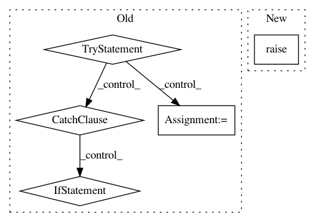

24b605e8ec48b9b67e507ca959eaed4ff4afc6a6,reframe/frontend/executors/policies.py,AsynchronousExecutionPolicy,run_check,#AsynchronousExecutionPolicy#Any#Any#Any#,205
Before Change
self.printer.status(status, msg)
def run_check(self, check, partition, environ):
try:
executor = RegressionTestExecutor(check, self.strict_check)
testcase = TestCase(executor)
executor.setup(
partition=partition,
environ=environ,
sched_account=self.sched_account,
sched_partition=self.sched_partition,
sched_reservation=self.sched_reservation,
sched_nodelist=self.sched_nodelist,
sched_exclude_nodelist=self.sched_exclude_nodelist,
sched_options=self.sched_options
)
ready_testcase = RunningTestCase(testcase, EnvironmentSnapshot())
partname = partition.fullname
if self._running_cases_counts[partname] >= partition.max_jobs:
// Make sure that we still exceeded the job limit
getlogger().debug("reached job limit (%s) for partition %s" %
(partition.max_jobs, partname))
self._update_running_counts()
if self._running_cases_counts[partname] < partition.max_jobs:
// Test"s environment is already loaded; no need to be reloaded
self._reschedule(ready_testcase, load_env=False)
else:
self._print_executor_status("HOLD", executor)
self._ready_cases[partname].append(ready_testcase)
except (KeyboardInterrupt, ReframeFatalError, AssertionError):
if not testcase.failed():
// test case failed during setup
testcase.fail(sys.exc_info())
self._failall()
raise
except BaseException:
// Here we are sure that test case has failed during setup, since
// _compile_and_run() handles already non-fatal exceptions. Though
// we check again the testcase, just in case.
if not testcase.failed():
testcase.fail(sys.exc_info())
finally:
if testcase.valid() and testcase.failed_stage == "setup":
// We need to print the result here only if the setup stage has
// finished, since otherwise _compile_and_run() prints it
self.printer.result(executor.check, partition, environ,
not testcase.failed())
self._test_cases.append(testcase)
self.environ_snapshot.load()
def _update_running_counts(self):
Update the counts of running checks per partition.
getlogger().debug("updating counts for running test cases")
freed_slots = {}
After Change
return TestStats(self._tasks)
def run_check(self, check, partition, environ):
super().run_check(check, partition, environ)
task = RegressionTask(check, self.task_listeners)
self._tasks.append(task)
try:
In pattern: SUPERPATTERN
Frequency: 3
Non-data size: 5
Instances
Project Name: eth-cscs/reframe
Commit Name: 24b605e8ec48b9b67e507ca959eaed4ff4afc6a6
Time: 2018-02-14
Author: karakasis@cscs.ch
File Name: reframe/frontend/executors/policies.py
Class Name: AsynchronousExecutionPolicy
Method Name: run_check
Project Name: DistrictDataLabs/yellowbrick
Commit Name: da729dab14194dba84e75571f08f927efbc19865
Time: 2019-08-22
Author: benjamin@bengfort.com
File Name: yellowbrick/classifier/confusion_matrix.py
Class Name: ConfusionMatrix
Method Name: score
Project Name: descarteslabs/descarteslabs-python
Commit Name: 233a089604121931a7f9e8b3861ca4b691cc555d
Time: 2020-01-17
Author: stephen@descarteslabs.com
File Name: descarteslabs/catalog/image_upload.py
Class Name: ImageUpload
Method Name: reload